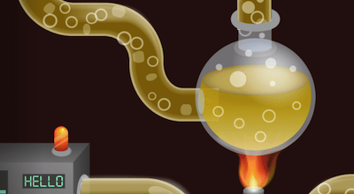
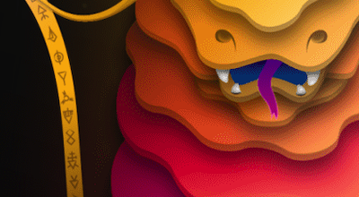

<div class="wrapper">
    <button class="route-link route-link--left main-page-link">
        <span>Main page</span>
        
    </button>
    <button class="route-link route-link--right contact-link">
        <span>About</span>
        
    </button>
    <h1 class="title animated">WORKS</h1>

    <ul class="previews-list animated delay-4">
        <li class="preview-1 works-page__list-item" data-preview="1">
            <svg class="gradient-digit" xmlns="http://www.w3.org/2000/svg" viewBox="0 0 72.3 187.5">
                <defs>
                    <linearGradient id="gradient" x1="80%" y1="0%" x2="20%" y2="100%">
                        <stop offset="0%" stop-color="#ff0000" />
                        <stop offset="100%" stop-color="#0000ff" />
                    </linearGradient>
                </defs>
                <polyline points="8.8,77.7 58.8,27.7 58.8,186.7 " stroke="url(#gradient)"  />
            </svg>                    
            
        </li>
        <li class="preview-2 works-page__list-item" data-preview="2">
            <svg class="gradient-digit" xmlns="http://www.w3.org/2000/svg" viewBox="0 0 124.5 185.5">
                <defs>
                    <linearGradient id="gradient2" x1="80%" y1="0%" x2="20%" y2="100%">
                            <stop offset="0%" stop-color="#00ffff" />
                            <stop offset="100%" stop-color="#0000ff" />
                    </linearGradient>
                </defs>
                <path stroke="url(#gradient2)" d="M17.8,56.4C17.8,31.9,37.6,12,62.1,12s43.1,19.9,44.4,44.4c0.9,18.5-23.6,42.7-40.9,66.5
                c-13.6,18.8-25.9,33.2-39.5,49.9h98"/>
            </svg>
            
        </li>
        <li class="preview-3 works-page__list-item" data-preview="3">
            <svg class="gradient-digit" xmlns="http://www.w3.org/2000/svg" viewBox="0 0 124.5 183.5">
                <defs>
                    <linearGradient id="gradient3" x1="80%" y1="0%" x2="20%" y2="100%">
                      <stop offset="0%" stop-color="#df3b82" />
                      <stop offset="100%" stop-color="#6517c1" />
                    </linearGradient>
                </defs>
                <path stroke="url(#gradient3)" d="M22,12.5h69L48,72h14.5c27.3,0,49.5,22.2,49.5,49.5S89.8,171,62.5,171S13,148.8,13,121.5"/>
            </svg>
            
        </li>
        <li class="preview-4 works-page__list-item" data-preview="4">
            <svg class="gradient-digit" xmlns="http://www.w3.org/2000/svg" viewBox="0 0 97 188.5">
                <defs>
                    <linearGradient id="gradient4" x1="80%" y1="0%" x2="20%" y2="100%">
                        <stop offset="0%" stop-color="#ffff00" />
                        <stop offset="100%" stop-color="#a01506" />
                    </linearGradient>
                </defs>
                <polyline stroke="url(#gradient4)" points="71,5 18.5,133.5 84.5,133.5 84.5,188 "/>
            </svg>      
            
        </li>
        <li class="preview-5 works-page__list-item" data-preview="5">
            <svg class="gradient-digit" xmlns="http://www.w3.org/2000/svg" viewBox="0 0 127 193">
                <defs>
                    <linearGradient id="gradient5" x1="80%" y1="0%" x2="20%" y2="100%">
                        <stop offset="0%" stop-color="#ffab80" />
                        <stop offset="100%" stop-color="#482071" />
                    </linearGradient>
                </defs>
                <path stroke="url(#gradient5)" d="M100,12H29v67h35c28.2,0,51,22.8,51,51s-22.8,51-51,51s-51-22.8-51-51"/>
            </svg>      
            
        </li>
        <li class="preview-6 works-page__list-item" data-preview="6">
            <svg class="gradient-digit" xmlns="http://www.w3.org/2000/svg" viewBox="0 0 127 196.5">
                <defs>
                    <linearGradient id="gradient6" x1="80%" y1="0%" x2="20%" y2="100%">
                        <stop offset="0%" stop-color="#ffd100" />
                        <stop offset="100%" stop-color="#ff0000" />
                    </linearGradient>
                </defs>
                <path stroke="url(#gradient6)" d="M83.4,86.5c18.3,7.7,31.1,25.9,31.1,47c0,28.2-22.8,51-51,51s-51-22.8-51-51
                    c0-6.2,1.1-12.2,3.2-17.7l0.8-2.3l55-108"/>
            </svg>     
            
        </li>
        <li class="preview-7 works-page__list-item" data-preview="7">
            <svg class="gradient-digit" xmlns="http://www.w3.org/2000/svg" viewBox="0 0 118.5 195">
                <defs>
                    <linearGradient id="gradient7" x1="80%" y1="0%" x2="20%" y2="100%">
                        <stop offset="0%" stop-color="#ff3861" />
                        <stop offset="100%" stop-color="#44c5f2" />
                    </linearGradient>
                </defs>
                <polyline stroke="url(#gradient7)" points="0,12 98,12 14,189 "/>
            </svg>
                
            
        </li>
        <li class="preview-8 works-page__list-item" data-preview="8">
            <svg class="gradient-digit" xmlns="http://www.w3.org/2000/svg" viewBox="0 0 126.5 207">
                <defs>
                    <linearGradient id="gradient8" x1="80%" y1="0%" x2="20%" y2="100%">
                        <stop offset="0%" stop-color="#00ccff" />
                        <stop offset="100%" stop-color="#55dd00" />
                    </linearGradient>
                </defs>
                <path stroke="url(#gradient8)" d="M40.6,61.5c-6.1-6.1-11-16.5-9.2-25.2c3.4-16.8,18-26.6,34.9-23.7c16.9,3,28.1,19,25.2,35.9
                c-2.2,12.7-14.2,19.4-23.3,26.8l-33.8,28.7c-10.6,10.3-19.6,18.5-21.4,34.1c-3.2,28,16.9,53.3,44.9,56.5c28,3.2,53.3-16.9,56.5-44.9
                c2.4-21-15.6-33.3-29.6-47.6"/>
            </svg>
            
        </li>
        <li class="preview-9 works-page__list-item" data-preview="9">
            <svg class="gradient-digit" xmlns="http://www.w3.org/2000/svg" viewBox="0 0 127 207">
                <defs>
                    <linearGradient id="gradient9" x1="80%" y1="0%" x2="20%" y2="100%">
                        <stop offset="0%" stop-color="#85dcd1" />
                        <stop offset="100%" stop-color="#00318c" />
                    </linearGradient>
                </defs>
                <path stroke="url(#gradient9)" d="M43.9,110c-18.3-7.7-31.1-25.9-31.1-47c0-28.2,22.8-51,51-51s51,22.8,51,51
                c0,6.2-1.1,12.2-3.2,17.7l-0.8,2.3L51.8,201.1"/>
            </svg>      
            
        </li>
    </ul>
</div>